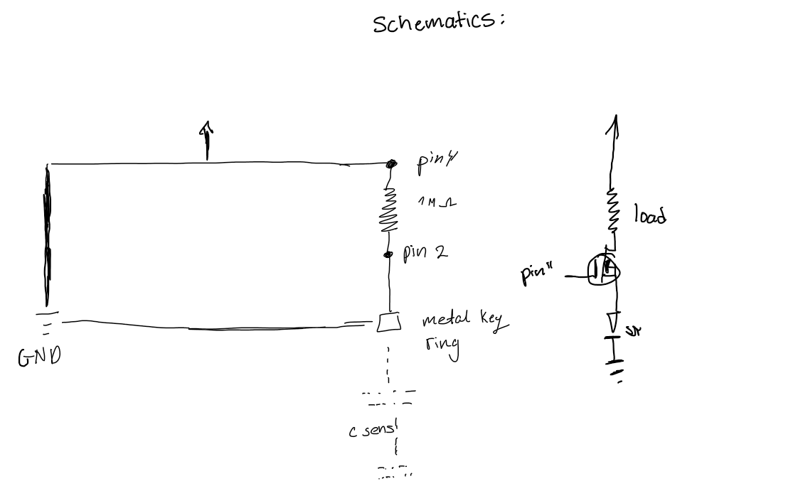

Here is the schematics for assignment 1
The schematics for this circuit shows a capacitive touch sensor circuit, where a metal key is the touch-sensitive element connected to pin 2 through a 1MΩ resistor (pin 4), and the touch detection controls an N-channel MOSFET (pin 11) to switch a load with a flyback diode for protection.

In this circuit, when the key ring is touched, the LED's begin flashing up until the key ring is no longer touched When the key ring is no longer touched, the LED's stays off.
Below is the code used for this assignment:
// Include the library
#include <tCapacitiveSensor.h>
CapacitiveSensor cs_4_2 = CapacitiveSensor(4,2); // 1 megohm resistor between pins 4 & 2, pin 2 is sensor pin, add wire, metal thing
const int led = 11; // pin number for our LED
void setup() {
pinMode(led, OUTPUT); // setting the LED to be an output
cs_4_2.set_CS_AutocaL_Millis(0xFFFFFFFF);
Serial.begin(9600); // serial communication
}
void loop() {
long start = millis(); // recording the time in milliseconds
long total1 = cs_4_2.capacitiveSensor(30); // reading the capacitive sensor (30 samples)
Serial.print(millis() - start); // check on performance in milliseconds
Serial.print("\t"); // tab character for debug window spacing
Serial.println(total1); // print sensor output 1
delay(50); // arbitrary delay to limit data to serial port
// if the reading is higher than 500 (there is touch) it begins flashing
if (total1 > 500) {
analogWrite(led, 255); // turns the LED on (max)
delay(200); // delay to provide flashing effect
analogWrite(led, 0); // turns the LED off
delay(200); // delay to provide flashing effect
} else {
analogWrite(led, 0); // if the reading is lower, then the LED is off
}
}
Below is a GIF of the circuit operation:

1. What is the absolute maximum amount of current between pins 2 and 3?
Answer: It depends, but for Pulsed Drain current, it would be 80A as for Continuous drain current at 25 degrees C it would be 37.2A and for 100 degrees C it would be 29.8A
2. Draw a schematic for a circuit with using at least your arduino, a DC motor, a flyback diode, and capacitors between power and ground. Find parts with datasheets you could use for each of these schematic components.
3. Draw a schematic using at least your arduino, this chip, and two motors. Write (pseudo) code that shows how you would move the motors both forward, both back, then one forward one back, and one back then forward
int motor1_in1 = 2; // Motor 1 input 1
int motor1_in2 = 3; // Motor 1 input 2
int motor2_in3 = 4; // Motor 2 input 3
int motor2_in4 = 5; // Motor 2 input 4
void setup() {
// Set pins as outputs
pinMode(motor1_in1, OUTPUT);
pinMode(motor1_in2, OUTPUT);
pinMode(motor2_in3, OUTPUT);
pinMode(motor2_in4, OUTPUT);
}
void loop() {
// Move both motors forward
digitalWrite(motor1_in1, HIGH);
digitalWrite(motor1_in2, LOW);
digitalWrite(motor2_in3, HIGH);
digitalWrite(motor2_in4, LOW);
delay(1000);
// Move both motors backward
digitalWrite(motor1_in1, LOW);
digitalWrite(motor1_in2, HIGH);
digitalWrite(motor2_in3, LOW);
digitalWrite(motor2_in4, HIGH);
delay(1000);
// Move one motor forward, one backward
digitalWrite(motor1_in1, HIGH);
digitalWrite(motor1_in2, LOW);
digitalWrite(motor2_in3, LOW);
digitalWrite(motor2_in4, HIGH);
delay(1000);
// Move one motor backward, one forward
digitalWrite(motor1_in1, LOW);
digitalWrite(motor1_in2, HIGH);
digitalWrite(motor2_in3, HIGH);
digitalWrite(motor2_in4, LOW);
delay(1000);
}